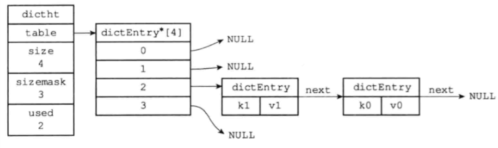
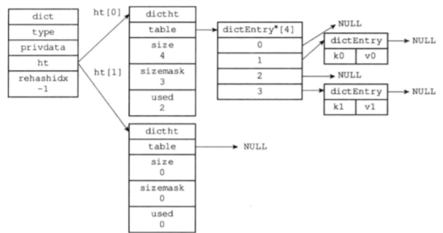

Redis设计与实现笔记三
字典：
又称符号表、关联数组、映射，是一种保存键值对的抽象数据结构。
Redis的字典使用哈希表作为底层实现，一个哈希表里面可以有多个哈希表节点，一个哈希表节点就保存了字典中的一个键值对。
哈希表：
由dict.h/dictht结构定义：
1 | typedef struct dictht{ |
table属性是一个数组，数组中的每个元素都是一个指向dict.h/dictEntry结构的指针，每个dictEntry结构保存一个键值对。size属性记录了哈希表的大小，也即是table数组的大小，而used属性则记录了哈希表目前已有节点的数量，sizemask属性的值总是等于size-1，这个属性和哈希值一起决定一个键应该被放在table数组的哪个索引上面。
哈希表节点：
使用dictEntry结构，每个dictEntry结构都保存一个键值对。
1 | typedef struct dictEntry{ |
key属性保存键，v属性保存值，可以是指针、uint64_t、uint64_t。
next属性指向另一个哈希表节点指针，解决哈希冲突。

字典：
由dict.h/dict结构表示：
1 | typedef struct dict{ |
type属性和privdata属性是针对不同的类型的键值对，为创建多态字典而设置的：
type属性是一个指向dictType结构的指针，每个dictType结构保存了一簇用于操作特定类型键值对的函数，Redis会为用途不同的字典设置不同的类型特定函数。
privdata属性则保存了需要传给那些类型特定函数的可选参数。
1 | typedef struct dictType{ |
ht属性是一个包含两项的数组，数组的每一项都是一个dictht哈希表，一般，字典只使用ht[0]，ht[1]用于对ht[0]rehash。

哈希算法：
Redis计算哈希值和索引值方法：
1 | //使用字典设置的哈希函数，计算键key的哈希值 |
解决键冲突：
当有两个或者以上数量的键被分配到哈希表数组的同一个索引上面的时候，产生了冲突。
使用链地址法来解决键冲突，每个哈希表节点都有一个next指针，多个哈希表节点可以用next指针构成一个单向链表，被分配到同一个索引上的多个节点可以用这个单向链表连接起来，从而解决键冲突。
新节点总是添加到链表的表头位置（复杂度为O(1)）
rehash:
扩展和收缩哈希表通过rehash（重新散列）完成
为字典的ht[1]哈希表分配空间，这个哈希表的空间大小取决于要执行的操作，以及ht[0]当前包含的键值对数量（也即是ht[0].used属性值）
如果执行的是扩展操作，那么ht[1]的大小为第一个大于等于ht[0].used*2的2^n值
如果执行的收缩，那么ht[1]的大小是第一个大于等于ht[0].used的2^n值
将保存在ht[0]中的所有键值对rehash到ht[1]上面：rehash指的是重新计算键的哈希值和索引值，然后将键值对放在ht[1]哈希表指定位置
当ht[0]包含所有键值对都迁移到ht[1]后，释放ht[0]，将ht[1]设置为ht[0]，并在ht[1]新建一个空白哈希表，为下一次rehash做准备。
哈希表的扩展与收缩：
哈希表的负载因子=哈希表已保存节点数量/哈希表大小
渐进式rehash
为了避免rehash对服务器性能造成影响，服务器不是一次性将ht[0]里面的所有键值对全部rehash到ht[1],二十分多次、渐进式地将ht[0]里面的键值对慢慢rehash。
在渐进式rehash进行期间，字典的删除、查找、更新等操作会在两个哈希表进行
渐进式rehash期间，新添加到字典的键值对一律会保存到ht[1]中


原文作者: Yang Peng
原文链接: http://ylovex.cn/2019/07/05/Redis设计与实现笔记三/
版权声明: 转载请注明出处(必须保留作者署名及链接)